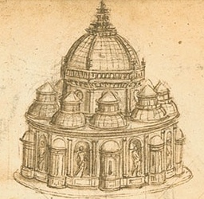
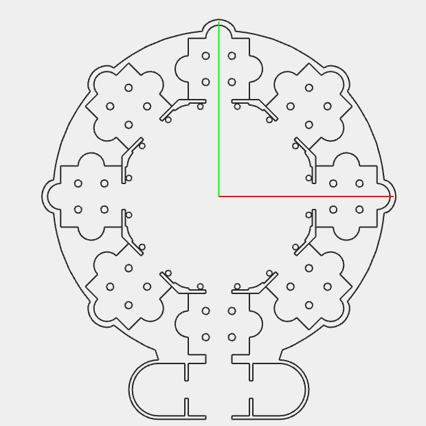
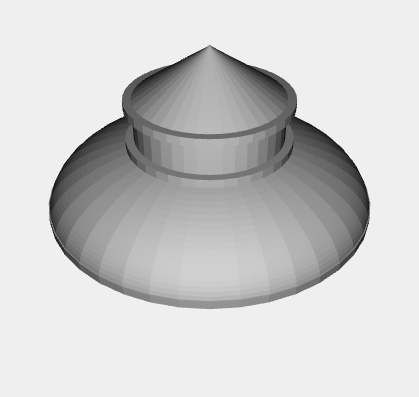
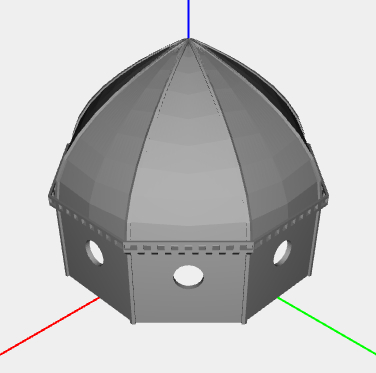
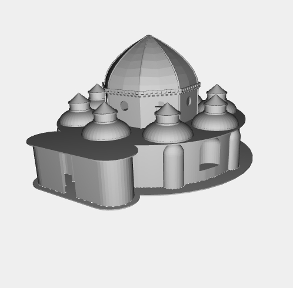

In the years between 1492 and 1516, Leonardo visited several times the city of Paris. In this period he wrote several architectural documents, collected in the "Codex Ashburnham", specifically he wrote about centralized churches.
These churches were caracterized by a symmetrical base in respect of the center of the plan and a large dome surrounded by smaller domes.
In this project I have realized a tridimensional model representing the centralized church showed in the picture.
Several details of the final model were not represented or were simplified due to the simple nature of the sketch of the church and the absence of a physical representation of the church.
The most evident example is the propylaeum which is shown in the church plan but it's not visibile in the sketch.

This part shown the base wall of the church. It was modeled by replicating a single section of the octagonal structure with the exception of the propylaeum which shows a different front side.
This section is structured on three layers.
The first layer defines the plan of the structure, the second layer has been used to model the inner and outer niches, the third layer has been used to model the inner and outer abses.
Due to its axial simmetry, has been modeled only a half of the octagonal structure.
The links below show the half and the full version of a single section and the

All the centralized churches designed by Leonardo show several side domes, one for each section. These domes have a simple structure formed by a semispherical holed vault, with a smaller vault covering the hole.
Here has been represented a single side dome. In the final model this single dome has been replicated eight times (one for each section) around the roof of the structure.

The central dome is the last part of the model. It resides at the center of the structure and it it caracterized by a large vault. Unlike the side domes, the central dome has an octagonal vault so it has been possible to divide it, like the base, in eight symmetrical sections.
Due to the unfinished (or ruined) sketch it was not possible to determine the real edge of the dome, so in this model it has been modeled like a spiked wedge.

The final model is composed by all the previously shown models plus some other elements needed to connect them. Due to the its complexity, the generation time of the model can last more than 1 minute. This depends mainly on the computer hardware.
For this reason there are three links to a complete model. The firs link load all the models at the same time. Becaus this can be an heavy task for the computer, I've added a second link that tries to load the parts at different times, so this takes a lot more time than the precedent link but it can surely show you the entire model.
The third link it's "manual loading" version which leaves to the user the task to load each part of the model. It can be useful to see a specific part instead of the full model.
These are the functions that load the model parts:
{kind=link}
{kind=link}
{kind=link}
{kind=link}
{kind=link}
{kind=link}